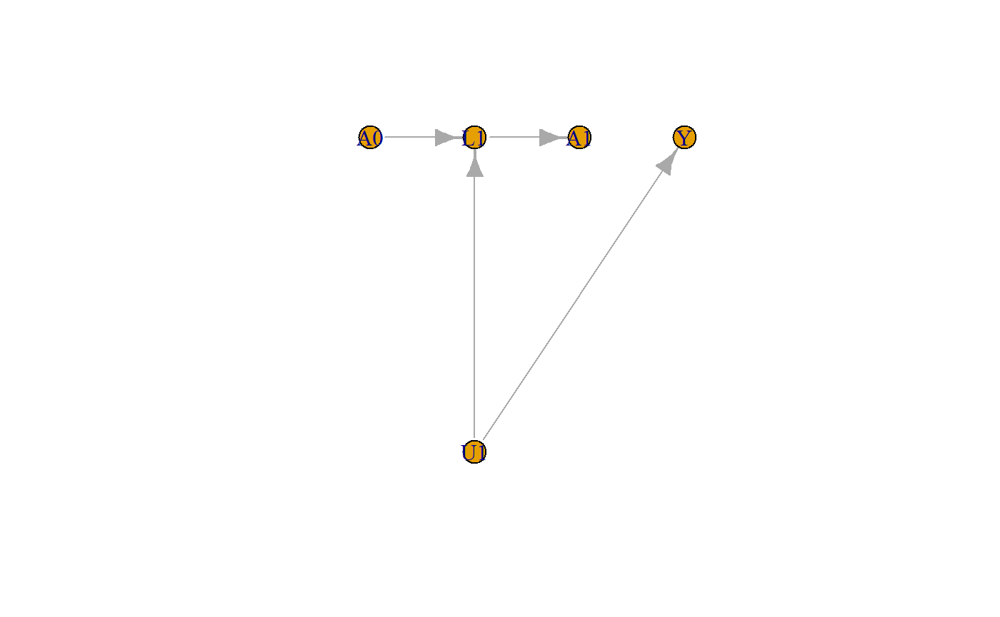
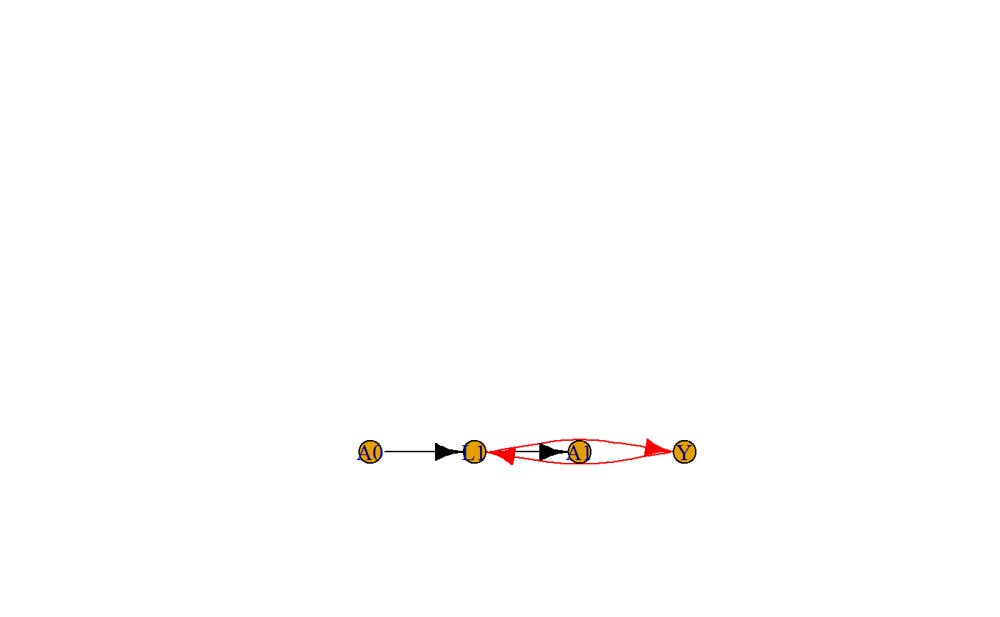

gml <- read.gml(here::here("labor", "hernan_book_graphs", "20.3.gml"), coords = T)
G <- parse.graphml(here::here("labor", "hernan_book_graphs", "20.3.graphml"))
G <- set_graph_attr(G, "layout", mat_from_gml(gml))
G.lat <- latent.projection(G, "U1")## Warning in `[<-.data.frame`(`*tmp*`, , 3, value = list(description =
## c("", : provided 2 variables to replace 1 variables
